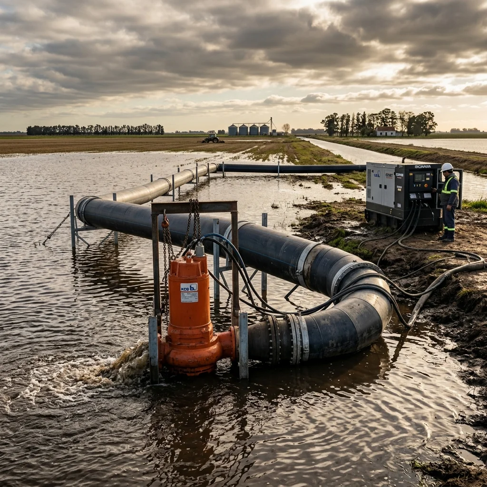
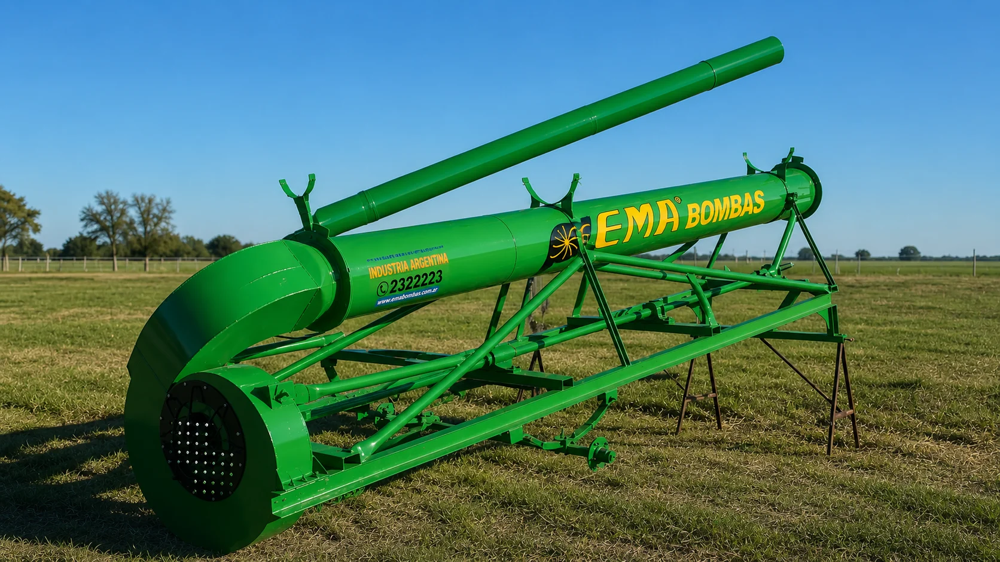
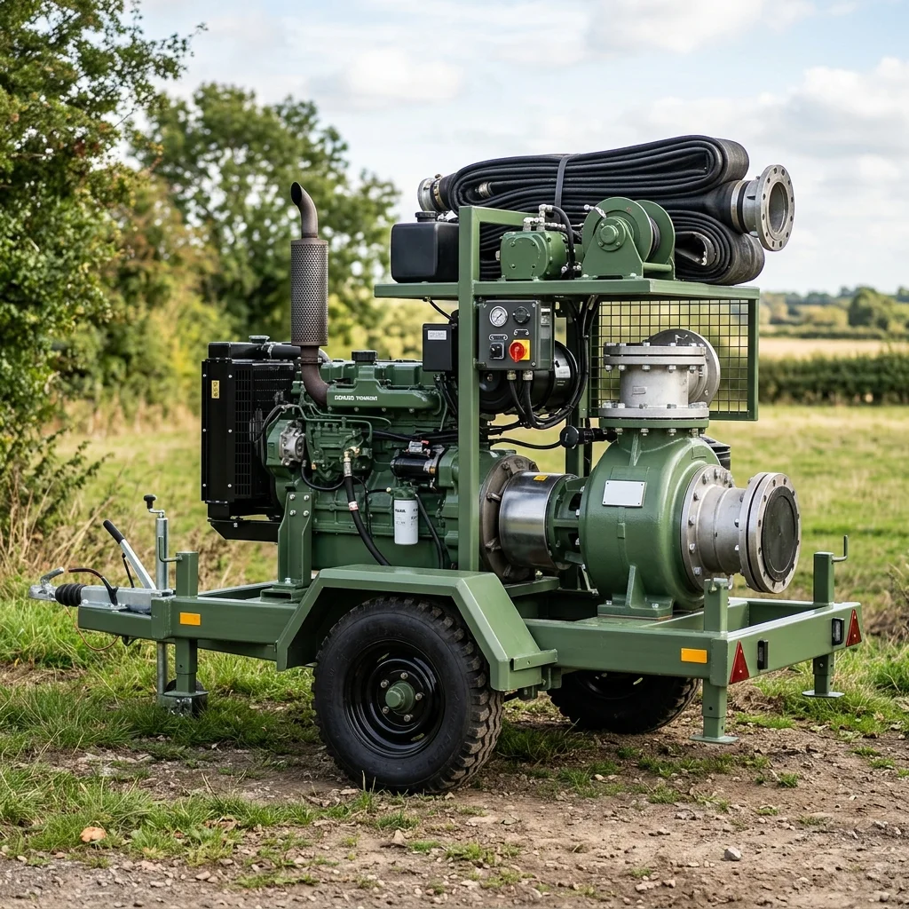
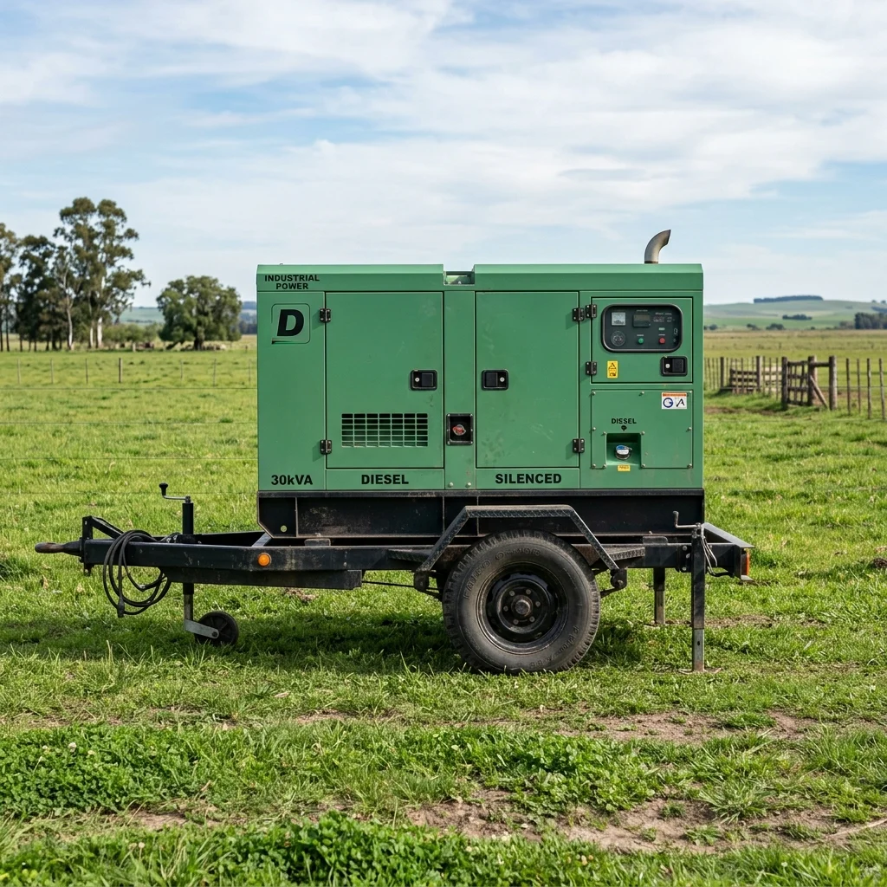

Motores
Nafteros, diésel o eléctricos, siempre con la potencia justa para cada modelo de bomba. Te asesoramos para que elijas el que más te convenga.

Fabricamos cada bomba acá, en nuestro taller. Nada importado, nada tercerizado. Acá vas a encontrar el equipo justo para tu necesidad.
Nuestro modelo estrella. Cuando la situación es urgente o la superficie es enorme, esta es la bomba que llamás.

Esta bomba no se anda con chiquitas. La diseñamos para sacar millones de litros por hora en situaciones donde cada minuto cuenta: inundaciones, riego masivo o desagote de obras grandes.
Probada en condiciones reales de campo argentino, aguanta jornadas largas con mantenimiento mínimo. La podés mover con la camioneta gracias a su chasis con ruedas.
Para el productor que riega todos los días o necesita desagotar campos y canales sin gastar una fortuna en combustible.
La pusimos a prueba con 500 metros de cañería y 15 metros de desnivel, y sacó más de 800.000 litros por hora sin despeinarse. Ideal para campos de mediana superficie donde necesitás regar bien sin complicarte.
Es más compacta que la de alto caudal, se instala en minutos y la podés mover fácil de un punto a otro del campo.

Nafteros, diésel o eléctricos, siempre con la potencia justa para cada modelo de bomba. Te asesoramos para que elijas el que más te convenga.
Todo lo que tu bomba pueda necesitar: rotores, rodamientos, crucetas, sellos. Siempre en stock para que no pares.
Caños de acople, bridas, cardán, adaptadores: todo armado para que la instalación sea plug and play.
Si no hay red eléctrica, no importa. Nuestros generadores van a donde sea y no hacen ruido.

EventosPara fiestas, casamientos, recitales o cualquier evento que necesite electricidad sin el ruido molesto de un generador abierto.
Consultar AlquilerMás potencia para trabajos pesados: alimentar bombas en el campo, herramientas en obra o instalaciones temporales que demandan watts de verdad.
Consultar AlquilerLlená represas, regá cultivos, traspasá agua entre canales. Nuestras bombas están hechas para el barro y el sol.
Sacale el agua a una excavación, bajá napas o drená un terreno antes de cimentar.
Cuando el agua sube, nuestras bombas bajan. Respuesta inmediata con equipos portátiles que se despliegan en minutos.
Generadores silenciosos para que suene la música y no el motor. Ideales para eventos al aire libre sin conexión a red.